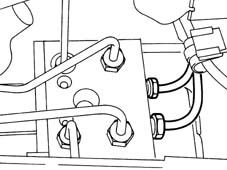
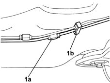

3340B62 rear connection central pipe - r r
- Path
- Procedures > 33 BRAKING SYSTEM > 3340 A(B.S. ANTI-LOCK BRAKING SYSTEM .) > 3340B abs system pipes > 3340B62 rear connection central pipe - r r
- Kind
- repair procedure (removal / refitting; the operation number is the code)
- Applies to
- all engines; all production periods
- Interactive page
- https://sloeber94.github.io/elrnDB-fMltpl/en/#/2891652
Applies to: all engines; production: da 09/03, da 04/02 a 08/03
 Removing
Removing
 Refitting
RefittingPlace the car on the ramp.
Disconnect the battery negative terminal.
 | Name | Connector |
|---|---|---|
- | Battery |
1. Using the special tool, undo the nut securing the rigid pipe to the rear brakes at the ABS control unit.
 | Name | Country |
|---|---|---|
- | Spanner | 1.856.127.000 |
Open the pipe retaining bands in the engine compartment.

Applies to: all engines; production: da 09/03, da 04/02 a 08/03
Raise the car.
1. Using the special tool, undo the connector (1a) for the rear brake pipes and release it from the bands (1b) located on the bodyshell. Remove the brake pipe from the vehicle.
| Name | Country |
|---|---|---|
- | Spanner | 1.856.127.000 |

Applies to: all engines; all production periods
Refitting
RemovingPosition the rigid brake pipe from the ABS control unit to the rear brake pipe connector.
Secure the pipe to the retaining clips present on the bodyshell.
Using the special tool, tighten the rigid pipe connector to the rear brake pipes.
| Name | Country |
|---|---|---|
- | Spanner | 1.856.127.000 |
Lower the vehicle.
Tighten the nut fixing the rigid pipe to the ABS control unit using the special tool.
| Name | Country |
|---|---|---|
- | Spanner | 1.856.127.000 |
Connect the battery negative terminal.
| Name | Connector |
|---|---|---|
- | Battery |
- 0010T64 brake and or clutch fluid check level and top up as necessary
- 0010T65 hydraulic brake system bleed air
Remove the car from the ramps.